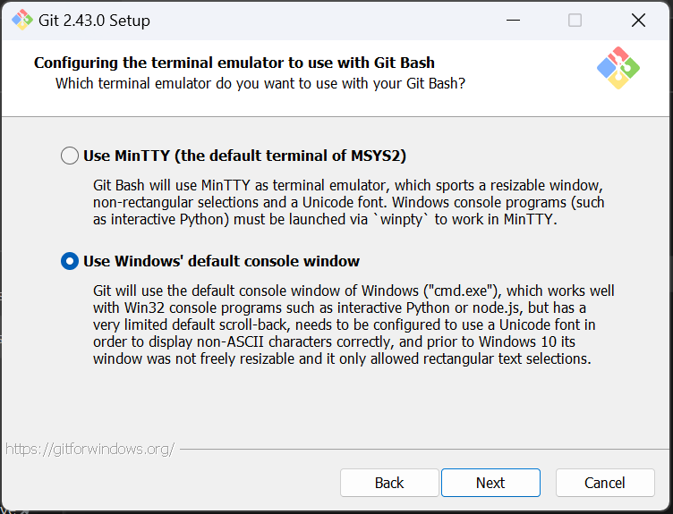

Setup and environment
Note
In brief — This page walks through preparing a working environment for OPEN-PROM: installing and configuring Git and GitHub, setting up Visual Studio Code with the Task Runner extension for launching model runs, resolving common setup problems, and configuring a shared Windows modelling server for multi-user use. The model can also be used without Git or VS Code, so this guide is aimed at users who want the full collaborative workflow.
OPEN-PROM is developed on GitHub and run through the R harness (start.R). The recommended day-to-day setup is Git for version control plus Visual Studio Code (VS Code) as the editor, with the GAMS, R and Python toolchains available on the PATH. This page covers a single-user workstation setup first, then the additional steps for a shared Windows modelling server.
Key terminology
A few terms recur throughout the OPEN-PROM workflow:
Git — a distributed version-control system that tracks file changes, keeps a revision history, and supports collaboration through branching and merging.
GitHub — a web platform built on Git that hosts repositories and adds code review, issue tracking and project management.
Visual Studio Code (VS Code) — a lightweight, extensible, open-source code editor from Microsoft.
Repository (“repo”) — the central store of a project’s files together with their version history.
Cloning — creating a local copy of a remote repository on your machine.
Commit — a snapshot of changes recorded in the repository history, with a descriptive message.
Push / Pull — uploading your local commits to the remote (push) and retrieving others’ changes into your local copy (pull).
Git and GitHub setup
Check for an existing Git installation
Open a command-line interface (Windows Command Prompt or a terminal) and run:
git --version
If Git is installed you will see a version number. If it is not, you will get a “command not recognised” message and need to install it.
Install Git
Download the installer for your operating system from https://git-scm.com/downloads.
Run the installer and follow the on-screen instructions. When prompted for the terminal emulator, select “Use Windows’ default console window” (see Fig. 1).
Re-run
git --versionto confirm the installation.Close and re-open your terminal so the new
PATHtakes effect.
{kind=link}

Fig. 1 During Git installation on Windows, select “Use Windows’ default console window”.
Create and configure a GitHub account
If you do not have an account, sign up at https://github.com and verify your email address.
Configure your identity for Git, using the same name and email registered on GitHub:
git config --global user.name "Your Name" git config --global user.email "youremail@example.com"
Clone the repository
On GitHub, open the OPEN-PROM repository, click Code, and copy the repository URL.
In your terminal, change into the directory where you want the local copy (for example
cd Documents).Clone it, optionally giving the local folder a name:
git clone <repository-url> <folder-name>
Close and re-open the terminal once cloning completes.
Commit and push changes
After editing files locally, save them and use the VS Code Source Control panel (the branch icon in the sidebar):
Review the changed files.
Enter a commit message and click the checkmark to commit.
Open the “…” menu and choose Push to upload your commits to GitHub.
Visual Studio Code
Install VS Code
Download VS Code from https://code.visualstudio.com/download and follow the installer.
Launch it, then open the cloned repository — either via File → Open Folder, or from a terminal whose working directory is the repository:
code .
This opens the repository as the VS Code workspace.
Orientation
The sidebar (left) hosts the key panels: Explorer (file tree), Search, Source Control (Git staging, commits, push), Run & Debug, and Extensions.
The integrated terminal runs command-line tasks — including
Rscript start.R— without leaving the editor.
Recommended extensions
Install these from the Extensions Marketplace (the square icon in the sidebar, or Ctrl+Shift+X); restart VS Code if prompted:
Git History (publisher Don Jayamanne) — browse file and repository history.
GitLens (optional) — inline blame annotations, commit details, branch comparison and history.
Task runner
The Task Runner extension adds clickable buttons inside VS Code for launching the predefined OPEN-PROM workflows, similar to the run buttons in GAMS Studio.
Tip
The Task Runner does not introduce a separate workflow. Its buttons are simply shortcuts for the commands defined in .vscode/tasks.json — typically Rscript start.R task_id=... or direct GAMS calls — which you could equally type in the terminal. It is a convenience, not a replacement for the command line.
Setup
Install the Task Runner extension by Sana Ajani from the Extensions Marketplace.
Restart VS Code.
Open the cloned
OPEN-PROMfolder.In the Explorer tab, find the Task Runner dropdown at the bottom of the panel and expand it to reveal the OPEN-PROM buttons read from
.vscode/tasks.json.
Run modes
The buttons map to OPEN-PROM’s run modes — broadly: development runs, development runs with fresh data generation, research runs, and calibration runs. Each combines GAMS flags (such as DevMode, GenerateInput, and reporting options) through start.R and the corresponding task body in scripts/tasks/. You do not need to memorise them at this stage.
See also
For the precise meaning of each task and its flags, see Running the model.
Troubleshooting
Setup problems are common; the most frequent ones and their fixes are below.
Git installation fails
Confirm your system meets the minimum requirements for installing Git.
On Windows, right-click the installer and choose Run as administrator.
Temporarily disable antivirus or firewall software that may be blocking the install.
As an alternative, install via the command line with Chocolatey:
choco install git.
GitHub authentication fails
Double-check your GitHub username and password.
If two-factor authentication is enabled, generate a personal access token and use it in place of your password.
Refresh the stored credential helper on Windows:
git config --global credential.helper wincred.
Cloning fails
Verify the repository URL is correct and accessible (watch for typos).
Check for a stable internet connection.
For a private repository, confirm you have access rights and are authenticated.
Update Git — older versions can have compatibility issues.
VS Code / Git integration problems
Make sure the Git and GitHub extensions are installed.
Restart VS Code; if needed, check for and install VS Code updates.
Re-authenticate with GitHub via the command palette (
Ctrl+Shift+P) and the Git commands.
Modelling server (Windows)
This section describes configuring a Windows 11 Pro machine as a shared modelling server, so that multiple users can run OPEN-PROM (plus mrprom and postprom), use VS Code, GAMS, R and Python system-wide, share data via SharePoint, and use Linux tools through WSL.
Connecting
Remote Desktop (RDP) — use the Windows “Remote Desktop Connection” app with the server’s IP address. Do not use the default account: choose More options → Use a different account and enter your username (for example
xl99) and password. Use the VPN when out of office or on a guest network.Concurrent sessions — each Windows session is isolated. Logging in via RDP interrupts another user’s session, but their session (and any running model runs) is kept active in the background.
SSH via OpenSSH server — under development.
System preparation
Ensure Windows 11 Pro is installed.
IT must create a user account for each modeller.
Administrator privileges are required during setup; ask IT for temporary admin rights if needed.
Install core software (system-wide)
Install Git first, before R and VS Code, so the latter can detect it automatically. It is recommended not to set up Git credentials per user.
Git — download from https://git-scm.com/download/win and install as administrator with “Install for all users”, a preferred path of C:\Git\, and “Add Git to PATH”. Verify with git --version.
R — download from https://cloud.r-project.org, install for all users to e.g. C:\R\R-4.4.0\, and install RStudio for all users afterwards (with admin rights). Then edit the global startup profile C:\R\R-4.4.0\etc\Rprofile.site so all users share consistent settings:
options(MADRAT_MAINFOLDER = "C:/madratverse")
Sys.setenv(RENV_CONFIG_AUTOINSTALL = FALSE)
Sys.setenv(RENV_CONFIG_PROJECT_AUTO = FALSE)
Sys.setenv(RENV_CONFIG_USER_PROFILE = FALSE)
Sys.setenv(RENV_PATHS_CACHE = "")
Confirm by opening R (or a VS Code R terminal) as another user and running .libPaths() — it should point at the shared library, e.g. C:/R/R-4.4.1/library.
VS Code — install to C:\Microsoft VS Code\, then create shared data and extensions folders (C:\VSCodeUserData, C:\VSCodeExtensions). Edit every shortcut (Desktop, Start Menu, Taskbar) so its target passes these folders:
"C:\Microsoft VS Code\Code.exe" --user-data-dir "C:\VSCodeUserData" --extensions-dir "C:\VSCodeExtensions"
Do not launch the original executable directly; with this change all users share extensions, settings and interpreter paths.
GAMS — download from https://www.gams.com/download/, install to C:\GAMS\<version>, and add GAMS to the system PATH.
Install MAgPIE system-wide (no renv)
Warning
Do not install MAgPIE via Chocolatey — it is unsuitable for multi-user setups.
Once R, Git and shared VS Code are working and users have the correct PATH and permissions, MAgPIE can be cloned and used system-wide without renv. In R (as admin):
install.packages("remotes")
remotes::install_github("pik-piam/magclass")
remotes::install_github("pik-piam/madrat")
remotes::install_github("pik-piam/mrcommons")
remotes::install_github("pik-piam/mrdrivers")
remotes::install_github("pik-piam/mrvalidation")
remotes::install_github("pik-piam/magpie")
Then:
Remove the
renvfolder from the MAgPIE directory.Edit
.Rprofilein the MAgPIE folder to disable renv auto-activation, commenting out all lines except the PIK package repository:if (!"https://rse.pik-potsdam.de/r/packages" %in% getOption("repos")) { options(repos = c(getOption("repos"), pik = "https://rse.pik-potsdam.de/r/packages")) }
Install the remaining required packages system-wide (
lucode2,gms, etc.).
A MAgPIE run can then be started with Rscript start.R in the MAgPIE folder — choose 1 for a default run, then 1 for direct execution.
Linux support — WSL (per-user)
There is no system-wide WSL installation; each user installs it separately:
wsl --install -d Ubuntu
Test the setup
Log out and log back in as a different Windows user, open PowerShell, and confirm each toolchain is on the PATH:
python --version
git --version
R --version
gams
If every command returns a version, the PATH is configured for all users. As a final end-to-end check, launch a research / new-data run of OPEN-PROM through the VS Code Task Runner.